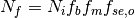
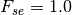

18. Fire¶
The fire parameterization in CLM contains four components: non-peat fires outside cropland and tropical closed forests, agricultural fires, deforestation fires in the tropical closed forests, and peat fires (Li et al. 2012a, b, 2013). In this fire parameterization, burned area is affected by climate and weather conditions, vegetation composition and structure, and human activities. After burned area is calculated, we estimate the fire impact, including biomass and peat burning, fire-induced vegetation mortality, and the adjustment of the carbon and nitrogen (C/N) pools. Justification for all equations and parameter values is given by Li et al. (2012a, b; 2013) in detail.
18.1. Non-peat fires outside cropland and tropical closed forest¶
Burned area in a grid cell per time step, (km 2 (time step) -1), is determined by
(km 2 (time step) -1), is determined by
(1)¶
where  (count (time step)-1) is fire
counts in the grid cell;
(count (time step)-1) is fire
counts in the grid cell;  (km:sup:2) is average fire
spread area of a fire.
(km:sup:2) is average fire
spread area of a fire.
18.1.1. Fire counts¶
Fire counts is taken as
(2)¶
where  ( count (time step)-1) is the
number of ignition sources due to natural causes and human activities;
( count (time step)-1) is the
number of ignition sources due to natural causes and human activities;
 and
and  (fractions) represent the availability
and combustibility of fuel, respectively;
(fractions) represent the availability
and combustibility of fuel, respectively;  is the
fraction of anthropogenic and natural fires unsuppressed by humans and
related to the socioeconomic conditions.
is the
fraction of anthropogenic and natural fires unsuppressed by humans and
related to the socioeconomic conditions.
(count (time step)-1) is given as
(3)¶
where  (count km-2 (time step)-1) and
(count km-2 (time step)-1) and  (count km-2 (time step)-1) are the number of natural and
anthropogenic ignitions per km2, respectively;
Ag is the area of the grid cell (km2).
is estimated by
(count km-2 (time step)-1) are the number of natural and
anthropogenic ignitions per km2, respectively;
Ag is the area of the grid cell (km2).
is estimated by
(4)¶
where  =0.25 is ignition efficiency of cloud-to-ground
lightning;
=0.25 is ignition efficiency of cloud-to-ground
lightning;  is the
cloud-to-ground lightning fraction and depends on the latitude
is the
cloud-to-ground lightning fraction and depends on the latitude
 ;
;  (flash km-2 (time step)-1) is the total lightning flashes. ,
is modeled as a monotonic increasing function of population density:
(flash km-2 (time step)-1) is the total lightning flashes. ,
is modeled as a monotonic increasing function of population density:
(5)¶
where  (count person-1 mon-1) is the number of potential ignition sources by a
person per month;
(count person-1 mon-1) is the number of potential ignition sources by a
person per month;  (person km-2) is the population density;
(person km-2) is the population density;
 represents anthropogenic ignition
potential as a function of human population density ; n
is the number of time steps in a month.
represents anthropogenic ignition
potential as a function of human population density ; n
is the number of time steps in a month.
Fuel availability is given as
(6)¶
where  (g C m-2) is the aboveground
biomass of combined leaf, stem and aboveground litter (leaf litter and
woody debris) pools;
(g C m-2) is the aboveground
biomass of combined leaf, stem and aboveground litter (leaf litter and
woody debris) pools;  =155 g C m-2 is
the lower fuel threshold below which fire does not occur;
=155 g C m-2 is
the lower fuel threshold below which fire does not occur;
 = 1050 g C m-2 is the upper fuel
threshold above which fire occurrence is not limited by fuel
availability.
= 1050 g C m-2 is the upper fuel
threshold above which fire occurrence is not limited by fuel
availability.
Fuel combustibility is estimated by
(7)¶
where  ,
,  ,
,  represent the dependence of fuel combustibility on relative humidity
RH (%), surface soil wetness
represent the dependence of fuel combustibility on relative humidity
RH (%), surface soil wetness  , and surface air
temperature T (ºC), respectively. is calculated by
, and surface air
temperature T (ºC), respectively. is calculated by
(8)¶
 =30% and
=30% and  =70% are used as the
lower and upper thresholds of relative humidity. is given by
=70% are used as the
lower and upper thresholds of relative humidity. is given by
(9)¶![f_{\theta } =\exp [-\pi (\frac{\theta }{\theta _{e} } )^{2} ]](../../_images/math/9eb24bf0e0ccafa0b079e3d083ff29f1612333b0.png)
where is the soil wetness defined as volumetric soil
moisture relative to that at saturation;  =0.69 is
the extinction coefficient of soil wetness. is given by
=0.69 is
the extinction coefficient of soil wetness. is given by
(10)¶![f_{T} =\max [0,\min (1,\frac{T+10}{10} )]](../../_images/math/77a7a3eb7f8a16ace021c4ee1c036d3b87234daf.png)
consistent with the fact that temperature is the main constraint for fire occurrence when temperature is below freezing, and fire generally does not occur when the temperature is less than -10 ºC.
For scarcely populated regions ( person
km-2), we assume that anthropogenic suppression on fire
occurrence is negligible, i.e.,
person
km-2), we assume that anthropogenic suppression on fire
occurrence is negligible, i.e., . In regions of
. In regions of
 person km-2, we parameterize the
fraction of anthropogenic and natural fires unsuppressed by human
activities as
person km-2, we parameterize the
fraction of anthropogenic and natural fires unsuppressed by human
activities as
(11)¶
where  and
and  are
the effects of the demographic and economic conditions on fire
occurrence. The demographic influence on fire occurrence is
are
the effects of the demographic and economic conditions on fire
occurrence. The demographic influence on fire occurrence is
(12)¶
For shrub and grass PFTs, the economic influence on fire occurrence is parameterized as a function of Gross Domestic Product GDP (k 1995US$ capita-1):
(13)¶![f_{e} =0.1+0.9\times \exp [-\pi (\frac{GDP}{8} )^{0.5} ]](../../_images/math/652ec8eed16e3029cb2ceadf08e8fbfd475bdde0.png)
which captures 73% of the observed MODIS fire counts with variable GDP
in regions where shrub and grass PFTs are dominant (fractional coverage
of shrub and grass PFTs  50%). In regions outside tropical
closed forests and dominated by trees (fractional coverage of tree PFTs
50%), we divide the MODIS fire counts into only two bins
(
50%). In regions outside tropical
closed forests and dominated by trees (fractional coverage of tree PFTs
50%), we divide the MODIS fire counts into only two bins
( k 1995US$ capita-1, and
k 1995US$ capita-1, and  k 1995US$ capita-1) and parameterize the economic
influence on fire occurrence for tree PFTs as
k 1995US$ capita-1) and parameterize the economic
influence on fire occurrence for tree PFTs as
(14)¶
to reproduce that the MODIS fire counts in tree-dominated regions of
GDP ( k 1995US$ capita-1 is 39% of that in
other tree-dominated regions.
k 1995US$ capita-1 is 39% of that in
other tree-dominated regions.
18.1.2. Average spread area of a fire¶
Fire fighting capacity depends on socioeconomic conditions and affects fire spread area. Due to a lack of observations, we consider the socioeconomic impact on the average burned area rather than separately on fire spread rate and fire duration：
(15)¶
where  is the average burned area of a fire without
anthropogenic suppression and
is the average burned area of a fire without
anthropogenic suppression and  is the socioeconomic
effect on fire spread area.
is the socioeconomic
effect on fire spread area.
Average burned area of a fire without anthropogenic suppression is assumed elliptical in shape with the wind direction along the major axis and the point of ignition at one of the foci. According to the area formula for an ellipse, average burned area of a fire can be represented as:
(16)¶
where  (m s-1) is the fire spread rate in
the downwind direction;
(m s-1) is the fire spread rate in
the downwind direction;  (s) is average fire
duration;
(s) is average fire
duration; and
and  are length-to-breadth ratio
and head-to-back ratio of the ellipse; 10-6 converts m2 to km2.
are length-to-breadth ratio
and head-to-back ratio of the ellipse; 10-6 converts m2 to km2.
According to Arora and Boer (2005),
(17)¶![L_{B} =1.0+10.0[1-\exp (-0.06W)]](../../_images/math/889150c5340a99e9755046f67748c6a5e9023954.png)
where  (m s-1) is the wind speed. According to
the mathematical properties of the ellipse, the head-to-back ratio
is
(m s-1) is the wind speed. According to
the mathematical properties of the ellipse, the head-to-back ratio
is
(18)¶
The fire spread rate in the downwind direction is represented as
(19)¶
(Arora and Boer, 2005), where  (m s-1) is the PFT-dependent average maximum fire spread
rate in natural vegetation regions;
(m s-1) is the PFT-dependent average maximum fire spread
rate in natural vegetation regions;  and
and  represent the dependence of on fuel wetness and wind
speed , respectively. is set to 0.55 m
s-1for grass PFTs, 0.46 m s-1 for
shrub PFTs, 0.43 m s-1 for needleleaf tree PFTs, and 0.40 m s-1 for other tree PFTs.
represent the dependence of on fuel wetness and wind
speed , respectively. is set to 0.55 m
s-1for grass PFTs, 0.46 m s-1 for
shrub PFTs, 0.43 m s-1 for needleleaf tree PFTs, and 0.40 m s-1 for other tree PFTs.
 is estimated by the dependence of
on root zone soil wetness (
is estimated by the dependence of
on root zone soil wetness ( ) and
relative humidity (
) and
relative humidity ( ). Here,
). Here, is a root
zone soil moisture limitation function. Due to a lack of observations to
calibrate , we adopt a simple linear function, where
is a root
zone soil moisture limitation function. Due to a lack of observations to
calibrate , we adopt a simple linear function, where
 =0.3 and
=0.3 and  =0.7 are the lower
and upper thresholds of root zone soil wetness, respectively.
** ** is set equal to . is
derived from the mathematical properties of the ellipse and Eqs and
=0.7 are the lower
and upper thresholds of root zone soil wetness, respectively.
** ** is set equal to . is
derived from the mathematical properties of the ellipse and Eqs and
(20)¶
Since g(W)=1.0, and and are at their
maxima and
and  when
when  , g(0) can be derived as
, g(0) can be derived as
(21)¶
In the absence of globally gridded data on barriers to fire (e.g. rivers, lakes, roads, firebreaks) and human fire-fighting efforts, average fire duration is simply assumed equal to 1 which is the observed 2001–2004 mean persistence of most fires in the world (Giglio et al. 2006).
As with the socioeconomic influence on fire occurrence, we assume that
the socioeconomic influence on fire spreading is negligible in regions
of person km-2, i.e.,
. In regions of person
km-2, we parameterize such socioeconomic influence as:
(22)¶
where  and
and  are
effects of the demographic and economic conditions on the average spread
area of a fire, and are identified by maximizing the explained
variability of the GFED3 burned area fraction with both socioeconomic
indices in grid cells with various dominant vegetation types. For shrub
and grass PFTs, the demographic impact factor is
are
effects of the demographic and economic conditions on the average spread
area of a fire, and are identified by maximizing the explained
variability of the GFED3 burned area fraction with both socioeconomic
indices in grid cells with various dominant vegetation types. For shrub
and grass PFTs, the demographic impact factor is
(23)¶![F_{d} =0.2+0.8\times \exp [-\pi (\frac{D_{p} }{450} )^{0.5} ]](../../_images/math/cee4b02048ec1f90bdf0850f5d57b3534ca3ec89.png)
and the economic impact factor is
(24)¶
For tree PFTs outside tropical closed forests, the demographic and economic impact factors are given as
(25)¶
and
(26)¶
Eqs. - reflect that more developed and more densely populated regions have a higher fire fighting capability.
18.1.3. Fire impact¶
In post-fire regions, we calculate PFT-level fire carbon emissions from
the jth PFT,  (g C (time step)-1, as
(g C (time step)-1, as
(27)¶
where  (km2(time step)-1) is burned area for the jth PFT;
Cj =(Cleaf, Cstem, Croot, Cts) is a vector with carbon density
(g C km-2) for leaf, stem (live and dead stem), root (fine, live coarse and dead coarse root), and transfer and storage carbon pools
as elements; CCj = (CCleaf, CCstem, CCroot, CCts) is the corresponding combustion
completeness factor vector (Table 18.1). Moreover, we assume that 30% and 20% of column-level litter and coarse woody debris are burned and
the corresponding carbon is transferred to atmosphere.
(km2(time step)-1) is burned area for the jth PFT;
Cj =(Cleaf, Cstem, Croot, Cts) is a vector with carbon density
(g C km-2) for leaf, stem (live and dead stem), root (fine, live coarse and dead coarse root), and transfer and storage carbon pools
as elements; CCj = (CCleaf, CCstem, CCroot, CCts) is the corresponding combustion
completeness factor vector (Table 18.1). Moreover, we assume that 30% and 20% of column-level litter and coarse woody debris are burned and
the corresponding carbon is transferred to atmosphere.
Tissue mortality due to fire leads to carbon transfers in two ways.
First, carbon from uncombusted leaf, live stem, dead stem, root, and
transfer and storage pools
 (g C km-2) is transferred to litter as
(g C km-2) is transferred to litter as
(28)¶
where
 is the corresponding mortality factor vector (Table 18.1). Second,
carbon from uncombusted live stems is transferred to dead stems as:
is the corresponding mortality factor vector (Table 18.1). Second,
carbon from uncombusted live stems is transferred to dead stems as:
(29)¶
where  is the corresponding mortality factor
(Table 18.1).
is the corresponding mortality factor
(Table 18.1).
Fire nitrogen emissions and nitrogen transfers due to fire-induced mortality are calculated the same way as for carbon, using the same values for combustion completeness and mortality factors. With CLM’s dynamic vegetation option enabled, the number of tree PFT individuals killed by fire per km2 (individual km-2 (time step)-1) is given by
(30)¶
where  (individual km-2) is the population
density for the jth tree PFT and
(individual km-2) is the population
density for the jth tree PFT and  is the
whole-plant mortality factor (Table 18.1).
is the
whole-plant mortality factor (Table 18.1).
18.2. Agricultural fires¶
The burned area of cropland (km2 (timestep -1) is taken as  :
:
(31)¶
where  ((timestep) -1) is a
constant; is the fuel availability factor;
((timestep) -1) is a
constant; is the fuel availability factor;
 represents the socioeconomic effect on fires;
represents the socioeconomic effect on fires;
 determines the seasonality of agricultural fires;
determines the seasonality of agricultural fires;
 is the fractional coverage of cropland.
= 0.31 hr-1 is estimated using
an inverse method, by matching 1997-2004 simulations from an unreleased
CLM4.5 version driven by Qian et al. (2006) atmospheric forcing and
climatological lightning data to the analysis of van der Werf et al.
(2010) that shows the 2001-2009 average contribution of cropland fires
is 4.7% of the total global burned area.
is the fractional coverage of cropland.
= 0.31 hr-1 is estimated using
an inverse method, by matching 1997-2004 simulations from an unreleased
CLM4.5 version driven by Qian et al. (2006) atmospheric forcing and
climatological lightning data to the analysis of van der Werf et al.
(2010) that shows the 2001-2009 average contribution of cropland fires
is 4.7% of the total global burned area.
We assume the same fuel-load requirement for all fires, so
is set by Eq. . The socioeconomic factor
is given as follows:
(32)¶
Here
(33)¶![f_{d} =0.04+0.96\times \exp [-\pi (\frac{D_{p} }{350} )^{0.5} ]](../../_images/math/8f4141417db6218931d09c74d1db19a417f0a8ae.png)
and
(34)¶
are the effects of population density and GDP on burned area, derived
in a similar way to Eqs. and . is set to 1 during the
climatological peak month for agricultural fires (van der Werf et al.
2010) in time steps with no precipitation and
T if no agricultural fires occurred
earlier in the year;
if no agricultural fires occurred
earlier in the year;  is set to 0 otherwise. Peak
month in this dataset correlates with the month after harvesting or the
month before planting. In CLM we use this dataset the same way whether
the CROP option is active or not, without regard to the CROP option’s
simulated planting and harvesting dates.
is set to 0 otherwise. Peak
month in this dataset correlates with the month after harvesting or the
month before planting. In CLM we use this dataset the same way whether
the CROP option is active or not, without regard to the CROP option’s
simulated planting and harvesting dates.
In the post-fire region, fire impact is parameterized similar to section 18.1.3 but with combustion completeness factors and tissue mortality factors for crop PFTs (Table 18.1).
18.3. Deforestation fires¶
CLM focuses on deforestation fires in tropical closed forests. Tropical
closed forests are defined as grid cells with tropical tree coverage
60% according to the FAO classification. Deforestation fires
are defined as fires caused by deforestation, including escaped
deforestation fires, termed degradation fires. Deforestation and
degradation fires are assumed to occur outside of cropland areas in
these grid cells. Burned area is controlled by the deforestation rate
and climate:
(35)¶
where b (time step)-1 is a global constant;
 (fraction) represents the effect of decreasing
fractional coverage of tree PFTs derived from land use data; and
(fraction) represents the effect of decreasing
fractional coverage of tree PFTs derived from land use data; and
 (fraction) represents the effect of climate
conditions on the burned area.
(fraction) represents the effect of climate
conditions on the burned area.
Constants b and  are calibrated
based on observations and reanalysis datasets in the Amazon rainforest
(tropical closed forests within 15.5ºS
are calibrated
based on observations and reanalysis datasets in the Amazon rainforest
(tropical closed forests within 15.5ºS 10.5ºN,
30.5ºW91ºW). b=0.035 d-1 and
is defined as
10.5ºN,
30.5ºW91ºW). b=0.035 d-1 and
is defined as
(36)¶
where  (yr:sup:-1) is the annual loss of tree cover
based on CLM4’s land use and land cover change data.
(yr:sup:-1) is the annual loss of tree cover
based on CLM4’s land use and land cover change data.
The effect of climate on deforestation fires is parameterized as:
(37)¶![\begin{array}{l} {f_{cli,d} =\max [0,\min (1,\frac{b_{2} -P_{60d} }{b_{2} } )]^{0.5} \max [0,\min (1,\frac{b_{3} -P_{10d} }{b_{3} } )]^{0.5} } \\ {\qquad \max [0,\min (1,\frac{0.25-P}{0.25} )]} \end{array}](../../_images/math/e5aeaa4c52248092755e6e1d258fcfc713b52a53.png)
where (mm d-1) is instantaneous
precipitation, while
(mm d-1) is instantaneous
precipitation, while  (mm d-1) and
(mm d-1) and
 (mm d-1) are 60-day and 10-day running
means of precipitation, respectively;
(mm d-1) are 60-day and 10-day running
means of precipitation, respectively;  (mm
d-1) and
(mm
d-1) and  (mm d-1) are the
grid-cell dependent thresholds of and ;
0.25 mm d-1 is the maximum precipitation rate for
drizzle. Le Page et al. (2010) analyzed the relationship between
large-scale deforestation fire counts and precipitation during
20032006 in southern Amazonia where tropical
evergreen trees (BET Tropical) are dominant. Figure 2 in Le Page et al.
(2010) showed that fires generally occurred if both and
were less than about 4.0 mm d-1, and
fires occurred more frequently in a drier environment. Based on the
30-yr (1985:math:text{-}2004) precipitation data in Qian et al.
(2006), the climatological precipitation of dry months (P:math:<4.0
mm d-1) in a year over tropical deciduous tree (BDT
Tropical) dominated regions is 46% of that over BET Tropical dominated
regions, so we set the PFT-dependent thresholds of and
as 4.0 mm d-1 for BET Tropical and 1.8
mm d-1 (= 4.0 mm d-1
(mm d-1) are the
grid-cell dependent thresholds of and ;
0.25 mm d-1 is the maximum precipitation rate for
drizzle. Le Page et al. (2010) analyzed the relationship between
large-scale deforestation fire counts and precipitation during
20032006 in southern Amazonia where tropical
evergreen trees (BET Tropical) are dominant. Figure 2 in Le Page et al.
(2010) showed that fires generally occurred if both and
were less than about 4.0 mm d-1, and
fires occurred more frequently in a drier environment. Based on the
30-yr (1985:math:text{-}2004) precipitation data in Qian et al.
(2006), the climatological precipitation of dry months (P:math:<4.0
mm d-1) in a year over tropical deciduous tree (BDT
Tropical) dominated regions is 46% of that over BET Tropical dominated
regions, so we set the PFT-dependent thresholds of and
as 4.0 mm d-1 for BET Tropical and 1.8
mm d-1 (= 4.0 mm d-1  46%)
for BDT Tropical, and b2 and b3 are
the average of thresholds of BET Tropical and BDT Tropical weighted by
their coverage.
46%)
for BDT Tropical, and b2 and b3 are
the average of thresholds of BET Tropical and BDT Tropical weighted by
their coverage.
The post-fire area due to deforestation is not limited to land-type
conversion regions. In the tree-reduced region, the maximum fire carbon
emissions are assumed to be 80% of the total conversion flux. According
to the fraction of conversion flux for tropical trees in the
tree-reduced region (60%) assigned by CLM, to reach the maximum fire
carbon emissions in a conversion region requires burning this region
about twice when we set PFT-dependent combustion completeness factors to
about 0.3 for stem [the mean of 0.2 0.4 used in van
der Werf (2010)]. Therefore, when the burned area calculated from Eq. is
no more than twice the tree-reduced area, we assume no escaped fires
outside the land-type conversion region, and the fire-related fraction
of the total conversion flux is estimated as
0.4 used in van
der Werf (2010)]. Therefore, when the burned area calculated from Eq. is
no more than twice the tree-reduced area, we assume no escaped fires
outside the land-type conversion region, and the fire-related fraction
of the total conversion flux is estimated as
 . Otherwise, 80% of the total
conversion flux is assumed to be fire carbon emissions, and the biomass
combustion and vegetation mortality outside the tree-reduced regions
with an area fraction of
. Otherwise, 80% of the total
conversion flux is assumed to be fire carbon emissions, and the biomass
combustion and vegetation mortality outside the tree-reduced regions
with an area fraction of  are set as in
section 18.1.3.
are set as in
section 18.1.3.
18.4. Peat fires¶
The burned area due to peat fires is given as :
(38)¶
where c (time step)-1 is a constant;  represents the effect of climate on the burned area;
represents the effect of climate on the burned area; is the fractional coverage of peatland in the grid cell; and
is the fractional coverage of peatland in the grid cell; and
 is the fraction of the grid cell with a water table at
the surface or higher. c=1.010-3 hr-1 for tropical peat fires and
c=4.210-5 hr-1 for boreal peat fires are derived using an inverse
method, by matching simulations from an unreleased
CLM4.5 version driven by Qian et al. (2006) atmospheric forcing and
climatological lightning data to earlier studies: about 2.4 Mha peatland
was burned over Indonesia in 1997 (Page et al. 2002) and the average
burned area of peat fires in Western Canada was 0.2 Mha
yr-1 for 1980-1999 (Turestky et al. 2004).
is the fraction of the grid cell with a water table at
the surface or higher. c=1.010-3 hr-1 for tropical peat fires and
c=4.210-5 hr-1 for boreal peat fires are derived using an inverse
method, by matching simulations from an unreleased
CLM4.5 version driven by Qian et al. (2006) atmospheric forcing and
climatological lightning data to earlier studies: about 2.4 Mha peatland
was burned over Indonesia in 1997 (Page et al. 2002) and the average
burned area of peat fires in Western Canada was 0.2 Mha
yr-1 for 1980-1999 (Turestky et al. 2004).
For tropical peat fires, is set as a function of
long-term precipitation :
(39)¶![f_{cli,p} =\max [0,\min (1,\frac{4-P_{60d} }{4} )]^{2} .](../../_images/math/721d832f2ade78e2675b38112797ef82ea2eab4a.png)
For boreal peat fires, is set to
(40)¶![f_{cli,p} = \exp (-\pi \frac{\theta _{17cm} }{0.3} )\cdot \max [0,\min (1,\frac{T_{17cm} -T_{f} }{10} )]](../../_images/math/e4cecc0899d1aece26c9e8686ab5ea7678879ad7.png)
where  and
and  are the wetness and
temperature of the top 17 cm of soil;
are the wetness and
temperature of the top 17 cm of soil;  =273.15 K is the
freezing temperature.
=273.15 K is the
freezing temperature.
Peat fires lead to peat combustion and the combustion and mortality of vegetation in peatlands. For tropical peat fires, based on Page et al. (2002), about 6% of the peat carbon loss from stored carbon is caused by 33.9% of the peatland burned. Carbon emissions due to peat combustion (g C m-2 (time step)-1) are therefore set as the product of 6%/33.9%, by burned area fraction of peat fire ((time step)-1), by soil organic carbon (g C m-2). For boreal peat fires, the carbon emissions due to peat combustion are set as 2.2 kg C m-2peat fire area (Turetsky et al. 2002). Biomass combustion and vegetation mortality in post-fire peatlands are set the same as section 18.1.3 for non-crop PFTs and as section 18.2 for crops PFTs.
Table 18.1. PFT-specific combustion completeness and fire mortality factors.
| PFT | CCleaf | CCstem | CCroot | CCts | Mleaf | Mlivestem | Mdeadstem | Mroot | Mts | Mlivestem |  j j |
|---|---|---|---|---|---|---|---|---|---|---|---|
| NET Temperate | 0.80 | 0.25 | 0.00 | 0.50 | 0.80 | 0.15 | 0.15 | 0.15 | 0.50 | 0.35 | 0.15 |
| NET Boreal | 0.80 | 0.25 | 0.00 | 0.50 | 0.80 | 0.15 | 0.15 | 0.15 | 0.50 | 0.35 | 0.15 |
| NDT Boreal | |||||||||||
| BET Tropical | 0.80 | 0.22 | 0.00 | 0.45 | 0.80 | 0.13 | 0.13 | 0.13 | 0.45 | 0.32 | 0.13 |
| BET Temperate | 0.80 | 0.22 | 0.00 | 0.45 | 0.80 | 0.13 | 0.13 | 0.13 | 0.45 | 0.32 | 0.13 |
| BDT Tropical | 0.80 | 0.22 | 0.00 | 0.45 | 0.80 | 0.10 | 0.10 | 0.10 | 0.35 | 0.25 | 0.10 |
| BDT Temperate | 0.80 | 0.22 | 0.00 | 0.45 | 0.80 | 0.10 | 0.10 | 0.10 | 0.35 | 0.25 | 0.10 |
| BDT Boreal | 0.80 | 0.22 | 0.00 | 0.45 | 0.80 | 0.13 | 0.13 | 0.13 | 0.45 | 0.32 | 0.13 |
| BES Temperate | |||||||||||
| BDS Temperate | 0.80 | 0.30 | 0.00 | 0.55 | 0.80 | 0.17 | 0.17 | 0.17 | 0.55 | 0.38 | 0.17 |
| BDS Boreal | 0.80 | 0.30 | 0.00 | 0.55 | 0.80 | 0.17 | 0.17 | 0.17 | 0.55 | 0.38 | 0.17 |
| C3 Grass Arctic | 0.80 | 0.80 | 0.00 | 0.80 | 0.80 | 0.20 | 0.20 | 0.20 | 0.80 | 0.60 | |
| C3 Grass | 0.80 | 0.80 | 0.00 | 0.80 | 0.80 | 0.20 | 0.20 | 0.20 | 0.80 | 0.60 | |
| C4 Grass | 0.80 | 0.80 | 0.00 | 0.80 | 0.80 | 0.20 | 0.20 | 0.20 | 0.80 | 0.60 | |
| Crop 1 | 0.80 | 0.80 | 0.00 | 0.80 | 0.80 | 0.20 | 0.20 | 0.20 | 0.80 | 0.60 | |
| Crop 2 |
Leaves ( ), stems (
), stems ( ),
roots (
),
roots ( ) , and transfer and storage carbon
(
) , and transfer and storage carbon
( ); mortality factors for leaves
(
); mortality factors for leaves
( ), live stems (
), live stems ( ),
dead stems (
),
dead stems ( ), roots
(
), roots
( ), and transfer and storage carbon
(
), and transfer and storage carbon
( ) related to the carbon transfers from these pools
to litter pool; mortality factors for live stems
(
) related to the carbon transfers from these pools
to litter pool; mortality factors for live stems
( ) related to the carbon transfer from live
stems to dead stems; whole-plant mortality factor ( ).
Parameters are calibrated in an unreleased CLM4.5 version driven by Qian
et al. (2006) atmospheric forcing and climatological lightning data.
) related to the carbon transfer from live
stems to dead stems; whole-plant mortality factor ( ).
Parameters are calibrated in an unreleased CLM4.5 version driven by Qian
et al. (2006) atmospheric forcing and climatological lightning data.